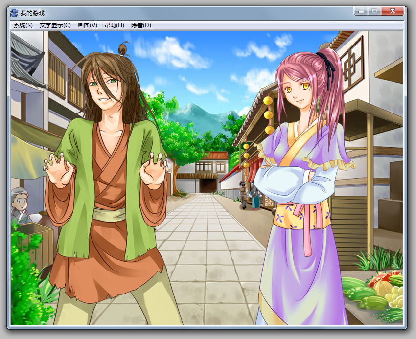

之前已经说过，脚本是以行为单位，顺序往下执行的。
也就是说，假如填写了“显示背景”，之后下一行“显示人物”，接着继续“显示对话框”、“显示对话”，按照这样的顺序，就可以做出“人物在场景里出现并说话”的效果。
接下来就来实际试试吧。
首先关掉刚刚的记事本，重新在脚本编辑器里打开“prelogue.ks”这个文件，进入脚本的图形化编辑界面。
然后点击选中第6行，也就是“（到达文件末端）”这行。
在第6行被选中的情况下，再点击一次，就会弹出新的指令输入窗口。
接下来自然是点击“显示背景”这个按钮，会弹出具体的参数输入界面。
通常来说显示一张背景图片，需要什么样的参数呢？
首先自然是“图片名”。然后可能还有“显示时间”和“显示效果”等等。
总之，先试试选择一张图片。点击“基本信息”“文件”右侧的小方框，将打开图片选择界面。
按照如下步骤操作，就可以选择一张背景图片。
假如觉得看缩略图不清楚的话，再点一下选中的图片会打开原大小的预览窗口。
确认图片以后，点下“确认”，就会回到显示背景的具体参数输入界面了。
回到显示背景的参数输入界面之后，可以不填写其他参数，直接点击“确认”。
在不填写其他参数的情况下，THE NVL Maker将按照默认效果“淡入”显示这张背景，显示的时间为700毫秒。
假如想要自己设定效果的话，就可以改变“显示效果”栏目下面的“时间”和“方式”。
其中根据选择的效果不同，可能还有其他追加的参数需要填写这点请注意。
例如说，假如选中了“遮片”这个显示效果，就需要同时指定遮片图。
不同的遮片图可以让背景显示的效果完全不同。
例如说，下图的遮片00，会让背景从左到右显示，01则是从右到左显示。
遮片文件放在rule文件夹下，可以自行添加修改。
再修改一下时间，背景的显示参数就填写完成了。
点下“确认”，可以看到脚本里的第6行变成了“显示背景 时间：500 效果：universal ……”的提示。
到此为止一张背景的显示就完成了。假如执行“事件测试”的话，就会看到背景的显示效果。
而假如执行“全局测试”的话，从标题画面点下“开始游戏”以后，也会看到这张背景以如下的效果显示出来。
……
……
等等！说好的中国风呢！
……呃，请，请先把范例素材复制到背景文件夹下，
然后修改一下参数，把上面的这张背景换成中国风的背景图吧。
自己动手是练习的好办法（才不是因为教程作者忘记导入素材呢）。
继续在脚本中新增一行，这次用于显示一个人物。点击“显示人物”按钮，就会弹出参数设置窗口了。
显示背景与显示人物的参数基本上是一样的，所不同的有两点：
1，显示人物时，需要指定显示的位置（在画面的左中右自动对齐，或是指定坐标）。而背景的位置是固定的。
2，显示人物时，参数里增加了一个“编号”，当不指定时，编号默认为0。
在这里，指定显示位置为“居中”，不填写编号。之后保存测试。
测试时会发现，虽然刚才指定了“居中”，但是人物并没有出现在画面的正中。
这是因为新建工程的时候，选择了800x600的画面大小，但使用的还是默认的1024x768画面的对齐。
现在先关闭编辑中的脚本，去看看如何调整这个设置。
点击“界面设定”分页，选择“Config.tjs”，将会打开KAGConfigEX2.exe。
这是吉里吉里/KAG的系统配置文件修改工具，大部分游戏系统细节都可以在这里进行调整。
之前的教程里，已经提到如何在这里修改字体等等，这次就来修改一下人物对齐的中线吧。
选择“图形与音声设定”分页，将“前景层的自动对齐位置”，自上而下分别设定成：200/300/400/500/600。
点击“保存”后关闭KAGConfigEX2，继续回到脚本进行测试。是不是发现位置显示正常了呢？
当然在游戏中，有时候会需要显示多个人物。这个时候就需要用到参数“编号”了。
所谓编号，其实就是“前景图层”的名字。一个前景图层上，只允许显示一张图片。
因此，当需要显示第二张人物图片时，就不能再使用默认的编号“0”，而应该改用其他的编号。
THE NVL Maker里，用于显示人物的前景图层一共有8个，编号分别为0~7。
在这里就选择“前景层No.1”作为第二个人物显示的图层，位置设定为“居右”。
现在画面上就显示了两个人物了。
对已经显示的人物，需要改变表情时，只要继续使用“显示人物”指令，使用同一图层编号，并指定这个人物不同表情的图片即可。
在这种情况下，人物位置可以选择“不改变”。
当然，“消除人物”时，也同样需要指定对应的编号。
现在，通过三行脚本，已经成功地显示了一张背景和两张人物图片。
但是显示时，是以背景->人物1->人物2的顺序显示的。也就是说，在背景显示完成之后，再显示人物1，之后才是人物2。
有些情况下，这样的显示顺序并不适用。
例如说，需要作出“两个人物一起登场”这样的效果时，“人物1和人物2一起出现”要比“先出现人物1，再出现人物2”更加合适。
这样的效果当然可以制作出来，但是就需要稍微花点心思了。
在基础教程里已经讲到的“表页、里页、画面切换”概念，会在这里派上用场。
要使用到的指令是：
请注意这种情况下，无论显示背景和人物，使用到的都是“载入图片”指令，而不是之前所用的“显示背景”、“显示人物”。
“载入图片”，是将需要一起显示出来的图片进行预先加载。
不管是先载入背景图片，还是先载入人物图片，都不会对最终的显示造成影响。——它们总是会一起显示出来。
“载入图片”时，同样需要选择“图层编号”。背景层的图层编号，和前景层的数字不同，为英文“stage”。
此外，最特殊的一点，还需要选择“载入”到图层的“表页（立刻显示）”或“里页（预先加载）”。
因为并不是想要立刻显示，而是想要等加载完毕之后，一起显示出来，这里应该选择载入到“里页（back）”。
“准备切换”，是将所有图层的表页内容复制到里页，以保证切换之后，不需要改变的内容依然维持显示。
在做好准备之后，就开始加载所有需要一起显示的图片。
接着是“执行切换”与“等待切换”。
在这个过程中，所有载入的图片将会以你指定的切换效果显示出来。
画面切换的流程是固定的，请不要随意打乱顺序，也不要偷工减料。
如果觉得这样的说明很复杂的话，请自己尝试一下就明白了。
以下则是常见的错误使用，和这些错误可能导致的后果：
不管使用到的是第一种还是第二种显示方法，在本章结束的时候，都应该可以做出如下图这样的效果了。
